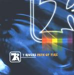

| Artist: | 7 Rivers |
| Title: | Path Of Fire |
| Label: | 7 Rivers 7R7088 |
| Length(s): | 46 minutes |
| Year(s) of release: | 2002 |
| Month of review: | [05/2002] |
| 1) | You | 3.39 |
| 2) | Aeroplane | 3.10 |
| 3) | Lady Luck | 3.04 |
| 4) | Michael Doesn't Live Her Anymore | 4.22 |
| 5) | Halloween | 6.12 |
| 6) | Flood | 3.26 |
| 7) | We Never See The End | 3.51 |
| 8) | Death Of 2 | 4.37 |
| 9) | Shadows | 3.59 |
| 10) | Mr. And Mrs. Reed | 3:34 |
| 11) | 7 Rivers | 6:11 |